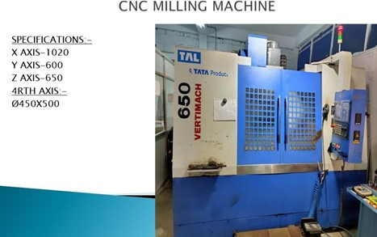
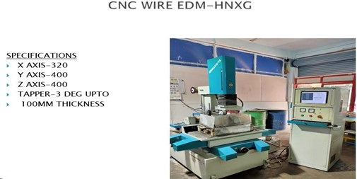
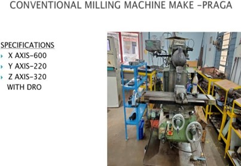
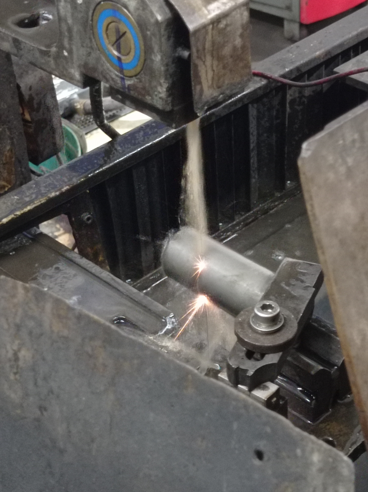
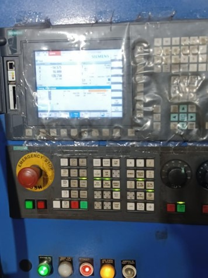

Project
-
Material Removal Manufacturing
Project Summary: Non-Traditional Machining Processes: Electrolytic machining, laser machining, and electron beam machining are employed for challenging materials and intricate shapes. Benefits include high energy density, strong penetration, and precision at molecular or atomic levels.
CNC Machining: CNC machines use computer programs for automated control, driven by components like DC and servo motors, stepper motors, and actuators.
Milling Process: Milling machines are crucial for producing parts with flat, curved, and intricate shapes. Two milling processes, up milling and down milling, cater to specific machining needs.
Heat Treatment: Various heat treatment methods, such as annealing, normalizing, hardening, tempering, and surface hardening, enhance material properties. Annealing involves controlled heating and slow cooling for a coarse pearlite structure.
Surface Roughness Measurement: Diverse methods like taper sectioning, glass measurement, diffraction techniques, tactile tests, pneumatic gauging, and optical sections are employed for surface roughness measurement.
Measurement and Calibration: Precision factors like exact size, approximate size, error of measurement, and sensitivity are pivotal for achieving industrial economy and part interchangeability.
Conclusion: This project provides a comprehensive overview of material removal manufacturing, emphasizing non-traditional machining, CNC processes, milling, heat treatment, surface roughness measurement, and measurement/calibration techniques. The integration of these processes is crucial for achieving precision and efficiency in industrial manufacturing.
Key Findings:- 1. Non-traditional machining processes offer unique advantages for challenging materials and shapes.
- 2. CNC machining ensures automated, precise control for cutting tools.
- 3. Milling machines play a vital role in shaping parts with diverse geometries.
- 4. Heat treatment techniques contribute to improved material properties.
- 5. Surface roughness measurement employs various methods for accurate assessment.
- 6. Precision in measurement and calibration is foundational for industrial economy and part interchangeability.




